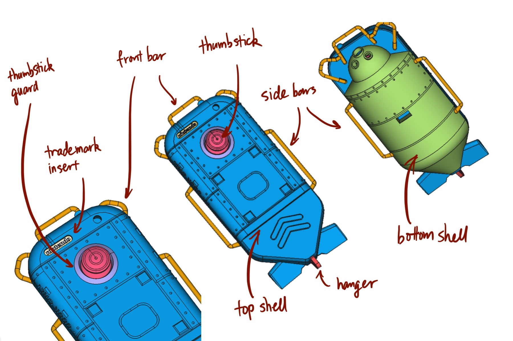
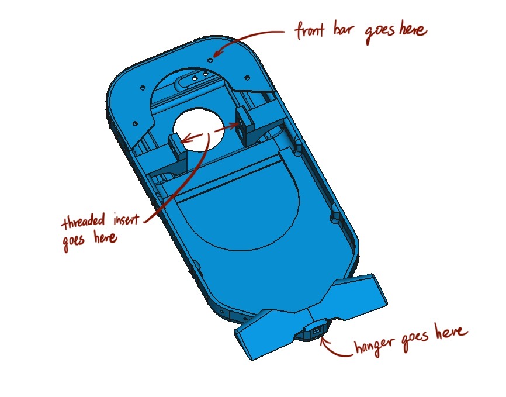
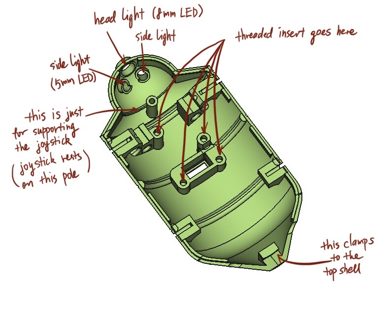
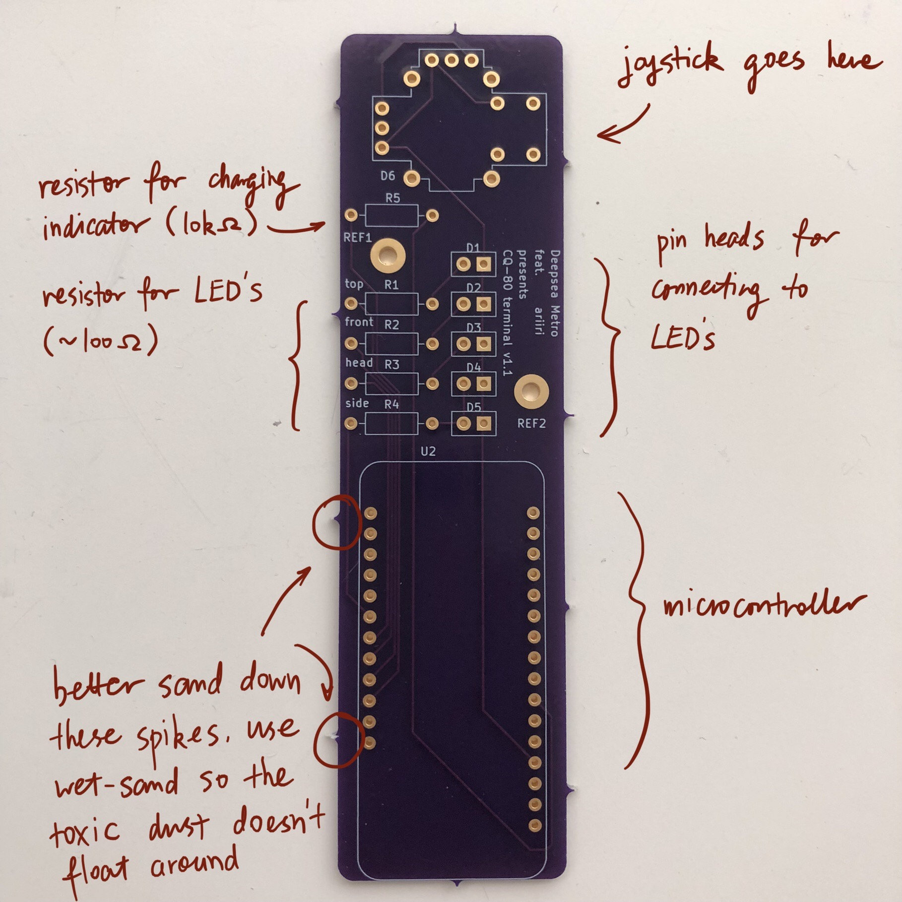
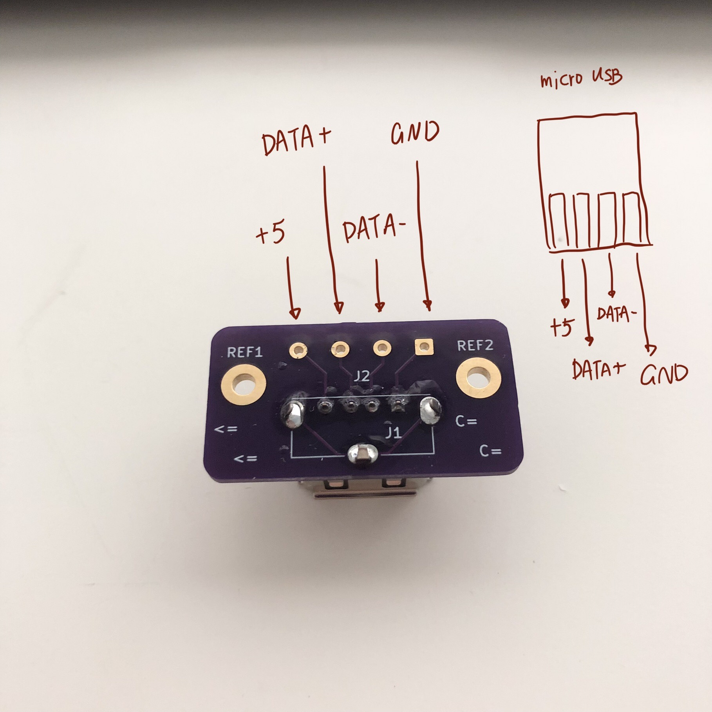
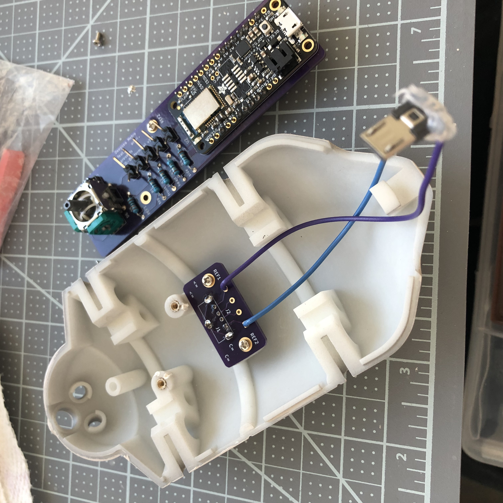
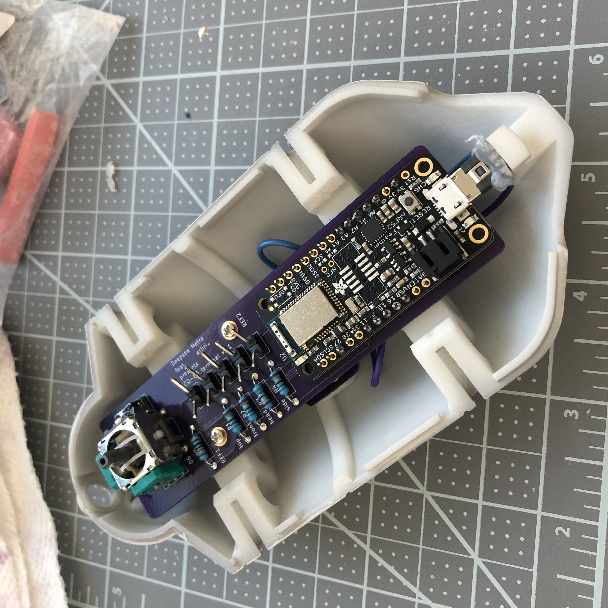

CQ-80 Terminal (NAMACO端末) Replica
Table of Contents
- 1. Overview
- 2. Download files
- 3. 3d-printed parts
- 4. Fitting the parts
- 5. Install threaded inserts to the printed parts
- 6. Uploading the program to the microcontroller
- 7. Printing PCB boards
- 8. Soldering electronic parts
- 9. Painting the parts
- 10. Assembly
- 11. Caring on the paint
- 12. If you don’t want the electronics
- 13. Parts listing
1. Overview
The CQ-80 replica is made of 3d-printed parts and (mostly) off-the-shelf electronic parts. The electronics allow it to connect to a computer via Bluetooth and control music playback. (It’s possible to exclude electronics, see below.)
To make the replica, you need to 3d-print the parts, paint them, buy all the electronics, solder them, upload a program to the microcontroller, and finally assemble everything together. I’d say that fitting the parts and painting them are the most difficult and time-consuming steps in the whole process.
Disclaimer: I’m an utter armature on 3d modeling, electronics and model painting. So dispite my best effort, there are short-comings all over the place. If you have any suggestion/feedback, I appreciate them very much.
2. Download files
Download model and PCB files from here: TODO (it just links to the GitHub release). Unpack it and you should see one directory, stl, and two zip files, board.zip, usb_breakout.zip. The stl directory contains 3d model files, and board.zip and usb_breakout.zip are files for printing the PCB board. Their use are explained as we go through each step.
3. 3d-printed parts
There are eight parts: the top and bottom shells, thumbstick and thumbstick guard, front bar, left and right side bars, the trademark insert on the top, and the hanger at the tail. The 3d model files for them are in the stl folder. I combined smaller parts together into a single file, so you only need to print three main parts: the top shell, the bottom shell, and the small parts combined.
I made the trade mark insert a separate piece, so you can design a custom insert and use that instead.

Figure 1: 3d-printed parts and their canonical name
I recommend printing using resin. MJF or SLS are ok, but they have fuzzy detail and uneven surface, and we don’t need the strength they provide. A strong resin is more than enough for our parts. Don’t use FDM. Its resolution is too low, and some structures in the parts simply cannot be printed with FDM.
I used pcbway.com for printing, they so much cheaper than sites like Shapeways and Xometry, and the result is not bad. If you are not concerned with budget, you can try Xometry, their quality is top-notch (but I haven’t tried their resin prints, only SLS prints). On pcbway.com I printed the top and bottom shell with Resin Somos EvoLVe 128, and the small parts with Resin UTR 8220. All three parts combined costs around $50 including shipping, really can’t complain.
[Here is a description of 3d-printing technologies I mentioned above: 3D Printing Technology Comparison: FDM vs. SLA vs. SLS. SLS and MJF are quite similar, what it says about SLS pretty much applies to MJF too.]
4. Fitting the parts
Once you receive the parts, you need to sand/file them a bit here and their so everything fits together. The fitting in the digital model is pretty tight, since you can always sand down tight fits but it’s really hard to fix a loose fit.
You can get some small files (round, square and flat) from local hobby stores, they are very handy for fitting parts.
5. Install threaded inserts to the printed parts
Out of the eight parts, top and bottom shell are fastened together by two screws, thumbstick guard and hanger are glued to the top shell, and trademark insert and side bars are friction-fit. The PCB board and USB breakout board are screwed into the bottom shell.
Therefore, we need to install threaded inserts to top and bottom shells. The parts are designed to use M2 screws and M2 threaded inserts. Here is a tutorial on installing heat-set inserts: Using Heat Set Inserts. You need iron and heat-set insert tip (or just the iron tip, it works ok). Do not press too hard when installing threaded inserts: the resin is strong but brittle, and is heat-resistant, so pressing too hard will break it. Be patient and press it in little by little.
Install inserts on these places:

Figure 2: Top shell

Figure 3: Bottom shell
6. Uploading the program to the microcontroller
You need a computer, a micro-usb cable and the Adafruit microcontroller.
- Follow this guide—Arduino Support Setup—to install Arduino IDE and support software. The board we use is nRF52832, follow instructions for nRF52832 and ignore ones for nRF52840.
- Test that everything is working fine by following this guide—Arduino Board Testing. Don’t skip this step.
- Use the Arduino IDE to open
/arduino/controller/controller.ino, and hit the right-pointing arrow to upload the program. The board and port settings should be already set by the previous step when we test the board.
7. Printing PCB boards
There are two boards to print, the main board (board.zip) and the USB breakout board (usb_breakout.zip). I used OSHPARK to print PCB boards. There are cheaper providers that I haven’t tried like pcbway and jlcpcb.
Take OSHPARK as an example, go onto their website and click “browse for files”, and choose the zip file for the board, upload it, then hit continue all the way. Use USPS for shipping ;-)
8. Soldering electronic parts
Test before soldering any parts! Test that the LED’s and resistors work! You’ll be in a world of pain if you find out a resister is bad after you’ve soldered it to the board.
- Solder the microcontroller to the main board
- Solder the joystick to the main board (you need to clip the two nubs under the joystick part because I forgot to create holes on the pcb board design)
- Solder the USB female connector to the USB breakout board
- Connect the USB breakout board to the micro-USB connector (the square hole on the breakout is ground)
- Solder resistors to the main board (for the LED’s anything around 100ω is fine, for the battery detection, use something large like 10kω)
- Solder header pins for the LED’s to the main board
- Solder some jumper wires to the LED’s and connect them to the header pins on the main board.
Of course, you can use LED’s of whatever color you like, just make sure the dimensions (5mm, 3mm, 8mm) are right.

Figure 4: Main board

Figure 5: USB board.
9. Painting the parts
9.1. Materials
I don’t have aerospray so I hand-painted the parts. I tried to use paints that are allegedly friendly to hand-painting. You can find a list of the paints I used below in the painting section.
If you don’t want to hand-paint and don’t have aerospray, you can get some spray cans and spray paint. I didn’t spray paint because I couldn’t find the exact color I want. When buying spray paint, make sure to by spray paints for modeling, like Tamiya and Mr. Hobby, not ones for graffiti or painting furnitures.
I used Pallid Wych Flesh (off-white) for the primary color of the top shell, and Pallid Wych Flesh mixing in a little bit Rakarth Flesh (brownish) for the bottom shell and the alt color on the top shell. For the violet red color (thumbstick, etc), I mixed Violet Red plus a little bit of Carmine Red. Carmine Red is probably optional, if you don’t mind your thumbstick to be a bit more purple than the official one.
This is the rough ratio for the paints, to the best of my recollection:
- Top shell
- Pallid Wych Flesh
- Bottom shell & top shell alt
- Pallid Wych Flesh : Rakarth Flesh = 7 : 1, maybe
- Thumbstick, etc
- Violet Red : Carmine Red = 5 : 1, possibly
- Grey parts
- Just the color of light grey primer (see below)
I really don’t remember… Luckily the two colors that requires mixing have large rooms of error.
9.2. Steps for painting
I learned this from watching accumulatively ~4.78 hrs of gunpla and 3d printing videos on YouTube, so don’t take my word for everything.
But anyway, you need to first fill the gaps like print-lines or other imperfections with acrylic putty, then sand the surfaces smooth. It should be very smooth to the touch, because any small imperfections you can’t see right now will show when you put on paint. You can get some sanding sponge which are very handy when sanding small models like this (you can find them at a local hobby store). I suggest you leave the putty to dry for at least a couple hours, ideally overnight, before sanding. Just casually put on some putty, let it dry, sand it next day, add more putty if necessary, and repeat. Take it slow and easy. Don’t rush it or get it done in one afternoon. This advice applies to the following steps as well.
{kind=link}
Once the surface is smooth, prime your parts with a light grey primer. For grey parts this is all they need. For other parts, the next step is to apply paint.
I suggest you first watch some hand-painting gunpla/miniature tutorials on YouTube before doing it, because it’s not too easy. Buy some nice, soft acrylic painting brush, don’t use cheap ones. The key seems to be thinning the paint just right: not too thin and not too thick. Also be patient and work layer by layer. The first and second layers are going to look really bad and it’s fine, after several layers you should get a pretty uniform color. If you are patient and apply thin layers, there is a larger room of error.
Finally, let the paint dry for a couple of hours and spray all the parts with a layer or two of clear top-coat to protect the paint. I used gloss top-coat because the in-game render seems to be glossy. And the end result is indeed very nice. If you want, you can use flat or half-gloss top-coat. After applying the top-coat, I suggest you to leave it along for at least a couple hours, ideally a day before touching it.
10. Assembly
Bottom shell:
- Install the LED’s. I suggest using hot glue gun to glue them in-place. Also make sure you test the LED’s before gluing them.
- Screw the USB breakout to the bottom shell
- Plug in the battery to the microcontroller
- Plug in the micro USB plug to the micro controller
- Screw the main board to the bottom shell, tuck the battery under the main board
Top shell:
- Glue the thumstick guard into place, I used super glue
- Glue the LED’s into place, I used hot glue gun
- Glue the hanger into place (super glue)
- Glue the front bars (super glue)
Assemble:
- Plug in LED’s wires to the main board
- Install the thumbstick
- Screw the top and bottom shell together
- Install side bars.

Figure 6: Installing the USB breakout board. Technically you only need to connect the +5 and GNU pins, like I did here. These two pins allows you to charge the battery through the USB port. But if you connect all four pins, you can use the USB port for uploading programs as well.

Figure 7: Installing the main board.
11. Caring on the paint
Even though we sprayed a protective top-coat, the paint is still easily damaged: I’ve had small dents on the CQ-80 that are deep enough to reveal underling primer. I guess spray painitng will give you a thinner and more robust paint, I’m also contemplating on using auto top-coats, I’ll report back with the result.
Anyway, the best way to protect the paint job is to not knock anything into it. Put it in a bag or a crystal coffin so nothing sharp can hit it.
12. If you don’t want the electronics
It should be quite feasible to do away all the electronics, should you only want the plastic model and don’t care about the music controller functionality. It’ll also cut the cost by a lot. You still need the joystick, just glue it to a cardboard or something, and glue the cardboard to the pole right under the joystick. I’d also reinforce the pole, eg, smudge a pile of hot glue around it.
13. Parts listing
3d-printed parts (in the stl folder):
Mechanical parts:
- M21 screws (8mm in length) × 4
- M2 screws (4mm) × 4
- Heat-set2 M2 threaded inserts (4mm × 3.5mm) (length × outer diameter) × 8
Printed PCB boards:
Electronic parts:
- Adafruit Feather nRF52 Bluefruit LE (nRF52832) (nRF52840 should also work if you know how to modify the program)
- Adafruit Lithium Ion Battery 3.7V 2000mAh
- Alps RKJXV1224 joystick (aka switch pro controller replacement joystick)
- Molex USB 2.0 type-A female vertical mount connector (product number 1050570001)
- USB Micro-B connector (anything similar-sized should work)
- Micro USB to USB cable (for uploading the program to the microcontroller)
- USB male to USB male cable (for charging CQ-80)
Electronic consumables:
- 5mm red LED × 1 (top light)
- 3mm green LED × 1 (front lamp)
- 8mm white LED × 1 (head light)
- 5mm warm-white LED × 2 (side lights)
- Resistors, 110Ω × 4, 10KΩ × 1. The resistance doesn’t have to be exact, 110Ω ones can be replaced by any resistor in the range of 50 to 300 ohms, and the 10K one can be replaced by any in the 10K-100K range.
- Jumper wires (female) (alternatively you can buy normal wires and Dupont pins and make jump wires yourself)
- Header pins
- Citadel Colour, Layer, Pallid Wych Flesh
- Citadel Colour, Base, Rakarth Flesh
- Vallejo Model Color 70.812 Violet Red
- (optional) Vallejo Model Color 70.908 Carmine Red
- Vallejo 70.401 Plastic Putty
- Tamiya Fine Surface Primer Light Grey Spray Can
- Mr. Super Clear UV Cut Gloss Top Coat (Tamiya or Mr. Hobby doesn’t matter, any top-coat should work)
- Sanding sponge I mentioned earlier, should be easily found in local hobby stores
Tools:
- Soldering kit (iron & tin, third hand) (for soldering and installing threaded inserts)
- (optional) Heat-set insert tip (for installing threaded inserts)
- Acrylic brushes
Footnotes:
“M2” is the “size” of the screw, read Thread types: The practical engineer’s guide for some explanations.
“Heat-set” means we melt the surrounding plastic and cool it to install the insert.